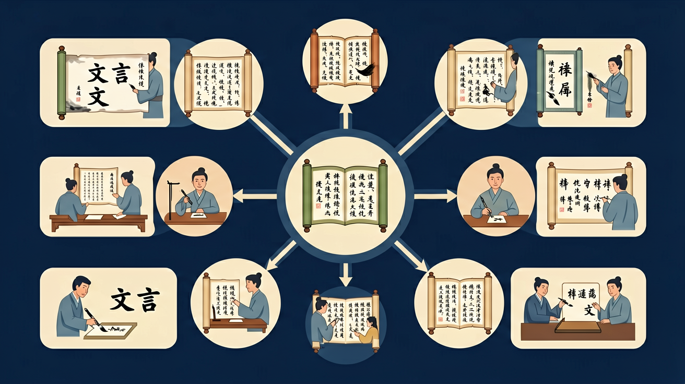

语言建构与运用是指学生在丰富的语言实践中，通过主动的积累、梳理和整合，逐步掌握祖国语言文字特点及其运用规律，形成个体言语经验，发展在具体语言情境中正确有效地运用祖国语言文字进行交流沟通的能力。

🎯 能说出文言文翻译'信达雅'三原则
🎯 能判断常见虚词在句中的功能
🎯 能分析特殊句式并准确转换语序
❓ 为什么文言文翻译总感觉像在猜谜语？
❓ 翻译时遇到不认识的虚词怎么办？
❓ 怎样判断自己翻译得对不对？
学完这一课，这些问题你都能自信地回答。
下列哪项最符合'信达雅'原则？
'沛公军霸上'的正确翻译是？
文言文翻译是高中语文的重要内容。语言建构与运用是指学生在丰富的语言实践中，通过主动的积累、梳理和整合，逐步掌握祖国语言文字特点及其运用规律，形成个体言语经验，发展在具体语言情境中正确有效地运用祖国语言文字进行交流沟通的能力。
能凭借语感和对语言运用规律的把握，根据具体的语言情境和不同的对象，运用口头和书面语言文明得体地进行表达与交流；能将具体的语言文字作品置于特定的交际情境和历史文化情境中理解、分析和评价。
迁移任务：找一道与「文言文翻译」相关的练习题或生活情境，用本课方法完整解答一遍。
翻译以直译为主、意译为辅，力求信达雅。落实关键词（实词虚词、活用、句式），不漏译、不随意添油加醋。得分点往往在关键词与句式处理。
专名保留，语助可删，省略要补，单音换双音，倒装要调。译完默读是否通顺。
常见误区：常见误区是通顺却偏离原意，或保留文言词不翻译。
高考文言翻译更强调？
1. 古籍数字化工程：中华书局"中华经典古籍库"项目，运用文言翻译规则处理7.5万页典籍。如《资治通鉴》"破釜沉舟"的翻译，需结合《史记·项羽本纪》互文印证，最终确定"砸毁炊具沉没船只"的军事术语译法。
2. 博物馆智能导览：故宫倦勤斋VR解说中，将"栉比鳞次"译为"像梳齿和鱼鳞般紧密排列"，既保留原比喻又符合现代认知。这种处理依托《营造法式》等建筑文献的300余处同类词例分析。
3. 外交文书互译：中日韩领导人会议联合声明中引用《诗经》"如切如磋"，翻译团队根据郑玄笺注采用"如同雕琢骨器般精益求精"的意译，避免了字面直译可能引发的文化歧义。
1. 为什么《庖丁解牛》中"技经肯綮之未尝"不能按字面翻译？分析线索：先考察"技"通假"枝"指脉络，"肯綮"是筋骨结合处；再注意"未尝"的否定范围实际覆盖整个动宾结构；最后结合庄子"以无厚入有间"的哲学观思考译文如何体现象征意义。
2. 当遇到《项羽本纪》"项王军壁垓下"这类特殊句式时，如何判断"壁"是名词活用还是动词？思考路径：先统计《史记》中"壁"作动词的12处用例；再对比同篇"乃自刎而死"的语法结构；最后考虑古代军事术语中"壁"常表示"筑营"的动作义项。
文言翻译始于对语言差异的认知，先要把握古今汉语在词汇（单音节词占文言76%vs现代汉语双音节词为主）、语法（宾语前置占比11.3%）、修辞（用典频率达43%）三大层面的根本区别。接着聚焦具体策略：对"沛公居山东时"的地理名词，需对照秦代行政区划译为"崤山以东"；处理"臣诚恐见欺于王"的被动句，要转换语序为"我确实担心被大王欺骗"；面对"金城千里"的夸张修辞，则需揭示其"坚固的城池"的本质义。最后落实到操作规范，遵循"直译为主意译为辅"原则，如《过秦论》"席卷天下"保留比喻译为"像卷席子般吞并天下"，而"囊括四海"则转化为"统一全国"。整个过程始终要参照王力《古代汉语》提出的"信达雅"三维标准，在教育部课标要求的120个文言实词和18个虚词框架内灵活处理。
1. 虚词机械对应：学生常将文言虚词"之"一律译作"的"，如《论语》"学而时习之"误译为"学习而且按时复习的"。根源在于忽视虚词多功能性，该句中"之"实为代词指代所学内容。正确处理需结合句法位置，此处应译为"它"或省略不译。
2. 文化意象硬译：翻译"黄发垂髫"时直接保留字面，不知这是古代对老人（黄发）与儿童（垂髫）的代称。错误源于缺乏文化常识积累，正确译法应为"老人和孩童"，如陶渊明《桃花源记》的典型处理。
3. 句式结构错判：面对宾语前置句"何陋之有"，常有学生译成"什么简陋的有"。这是现代汉语语序干扰所致，实则"之"是提宾标志，正确翻译应调整语序为"有什么简陋的呢"，需特别记忆《论语》中18处同类句式案例。
复制提示词到 AI 学伴，生成「文言文翻译」的思维导图或赏析提纲；也可以上传你手绘的示意图，请 AI 学伴点评。
复制后可粘贴到 AI 学伴继续对话。
下列翻译方法正确的是
统计《论语》中含'衣'字的句子
先独立作答，再点选项查看对错与错因。
下列加点词与现代汉语意思相同的一项是
'庭除'在文中最合理的解释是
翻译'微斯人，吾谁与归'时最需注意
《论语》'学而时习之'中'时'应译为____
答案：按时
'时'是名词作状语，表'按时'而非'时间'
'肉食者谋之'的'肉食者'指____
答案：当权者
借代修辞，用饮食特征指代贵族阶层
✅ 区分结构助词/代词/取消独立性
💡 忽视虚词多义性
✅ 人名/地名/官职名保留不译
💡 不理解'保留法'翻译原则
口诀：字字落实留删换，文从句顺调补贯
类比：像拼乐高：先找核心件（主谓宾），再连接小零件（虚词）
[真题]'然则诸侯之地有限'的'然则'应译为？
[迁移]翻译'市井之臣'时，最恰当的处理是？
[概念]判断翻译方法：'晋侯饮赵盾酒'的'饮'应？
点击节点跳转到对应章节；可切换布局。